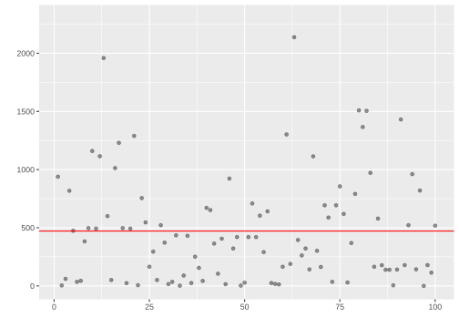
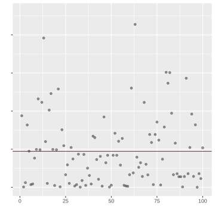
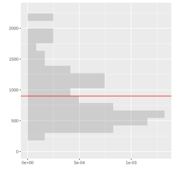
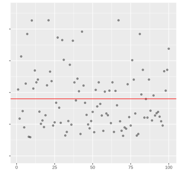
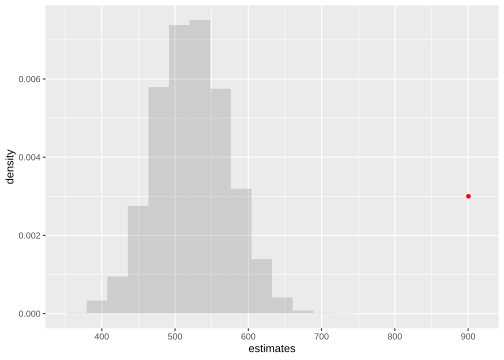

A mutual friends gives us some data describing the performance of NBA players in the 2023 season. Actually, they give us different data—they give me ‘sample 1’ and you ‘sample 2’. They say these are samples of size 100 drawn with replacement from the population of all players that played in the league that year.
Theres a fair amount of information about the players in our samples. Here’s a list of the variables we have.
Player - The player’s name.
Team: The team whose this player is playing for this season in abbreviated term.
Age: The Age of the player.
GP: The number of games that the player has played in this season.
W: The number of games won in which the player has played.
L: The numer of games lost in which the player has played.
Min: The minutes the player has played for this season.
PTS: The number of points made by the player.
An Estimation Problem
What we want to know is how many points, on average, a player in the league scored over the course of the season. That is, if we call the number of points these players scored \(y_1 \ldots y_m\), we want this. \[
\underset{\text{estimation target}}{\theta} = \frac{1}{m}\sum_{j=1}^m y_j.
\]
We’re going to estimate it exactly the same way, but using our sample \(Y_1 \ldots Y_n\) of size \(n=100\).
Here we’re following a convention in which we write our targets as some greek letter. Often \(\theta\). And add a ‘hat’, the thing above the letter theta in \(\hat\theta\), to indicate an estimator of that thing.
My estimate, for what it’s worth, is 471.56.
Y = my.sample$PTSn =length(Y)theta.hat =mean(Y)theta.hat
[1] 471.56
To put it in context, I plot my points around my estimate.
library(ggplot2)scale_y =scale_y_continuous(breaks=seq(0,2000,by=500), limits=c(0,2300))scale_x =scale_x_continuous(breaks=seq(0,2000,by=500), limits=c(0,2300))no_labs =labs(x='', y='')points.plot =ggplot(data.frame(i =1:n, y = Y)) +geom_point(aes(x = i, y = y), alpha = .4) +geom_hline(aes(yintercept = theta.hat), color ="red") + scale_y + no_labs points.plot

Here the x-coordinate is irrelevant. I’ve plotted pairs \((i,Y_i)\) where \(i=1 \ldots n\) counts out the observations in our sample and \(Y_i\) is the number of points the \(i\)th player in my sample scored. The red horizontal line is my estimate \(\hat\theta\) of the mean point total in the league.
To make it a little easier to see the distribution of season point totals in my sample, I plot a histogram and annotate it with my estimate \(\hat\theta\)—still a red line, but now vertical to fit into the layout of the histogram.
To make these fit together nicely, I rotate my histogram and lay my two plots out side by side so that the bins of the histogram align with the individual players’ points.1
points.histogram +coord_flip()
2
The theme(...) call turns off the vertical ‘tick labels’ 0, 500, … in the plot on the right. They’re redundant because our grids are aligned and we’ve already got the on the left.
points.plot +theme(axis.text.y =element_blank())


Exercise 6.1
Replicate my analyis using your sample. Report your estimate as well as your two plots.
Hint. You should be able to do this with a one-line change to my code.
Solution
Y = your.sample$PTSn =length(Y) theta.hat =mean(Y)theta.hat
1
This is the only line of code that’s different.
The estimate is 900.43. To get it, you can just rerun all the code above after making the one-line change indicated by the (1) mark. The result should look like this. Different looking sample. Way more big-scorers.


You notice that my estimate and yours are fairly different. To try to understand what’s going on, you want to run a simulation study. You call up our mutual friend and request they give you the data for every player in the league. And you get it. Here it is.
To get a sense of the sampling distribution of the estimator you and I are using, draw 10,000 samples of size \(n=100\) with replacement from this population, and get an average of points all sampled players scored of each sample to approximate our sampling distribution. Plot the averages you get in a histogram to get a visual sense and then answer this: how weird is your estimate? Do you think it’s likely that your sample was really drawn with replacement from this population?
A Starting Point
Here’s some code to get you started. All you’ve got to do is fill in the two lines I’ve marked—the lines where you sample from the population in the data frame pop and calculate an estimate based on that sample. What’s already there will do the work of making whatever code you write run 10,000 times and storing the results in a vector called estimates. Mouse over the marks on the right side of the code for more guidance.
library(purrr)pops =rep(list(our.pop), 10000)estimates = pops |>map_vec(function(pop) { m =nrow(pop) n =100 sam =NA theta.hat =NA theta.hat})
1
Here is where you do your sampling. You’ll find some useful code and an explanation of how it works in Lab 2.
2
You should have code from Exercise 6.1 to calculate an estimate given a sample.
Solution
I plotted the point estimate, too. It’s the red dot. It’s very weird. It’s nowhere near the sampling distribution of the estimator when we sample with replacement. We drew 10,000 samples and we didn’t get one anywhere close to that large. I’m suspicious that our friend was mistaken when they said this sample was drawn with replacement from our population.
library(purrr)pops =rep(list(our.pop), 10000)estimates = pops |>map_vec(function(pop) { m =nrow(pop) n =100 sam = pop[sample(1:m, n, replace=TRUE),] theta.hat =mean(sam$PTS) theta.hat})sampling.distribution.histogram =ggplot() +geom_histogram(aes(x=estimates, y=after_stat(density)), bins=20, alpha=.2)sampling.distribution.histogram +geom_point(aes(x=mean(your.sample$PTS), y=.003), color="red")

People do prefer an interval estimate to a point estimate. Let’s report some. Rather than calibrate our estimates using our samples, as we usually have to do in real life2, we’ll take advantage of our knowledge of the actual sampling distribution as we did in this week’s lecture. The one from Exercise 6.2.
Exercise 6.3
Calculate two 95% confidence intervals for the population mean: one based on my point estimate and one based on yours. Report these two interval estimates and draw them on your plot from Exercise 6.2.
Hint. To draw an interval centered at the point x,y with width w on top of a plot p, you can say p + geom_pointrange(x=x, xmin=theta.hat - w/2, xmax=theta.hat + w/2, y=y). Your x-coordinate should be your estimate and your y-coordinate doesn’t really mean anything, so use whatever you think makes it look good, like I did in Lecture 2.
Code You’ll Want
Here’s some code that’ll be useful.3 It takes a list of numbers—e.g. draws from our sampling distribution—and gives you a width. It finds the width you need for an interval centered at the list’s mean to cover all but \(100\alpha\%\) of its elements. Like the green shaded region we found in Lecture 2. If you have a list draws of draws from your estimator’s sampling distribution, you can say width(draws) to get the right width for a 95% confidence interval.
width =function(draws, center =mean(draws), alpha = .05) { covg.dif =function(w) { actual =mean(center - w /2<= draws & draws <= center + w /2) nominal =1- alpha actual - nominal }uniroot(covg.dif, interval =c(0, 2*max(abs(draws - center))))$root}
‘My interval’ is 471.56 ± 97.17 or equivalently [374.39, 568.73]. ‘Your interval’ is 900.43 ± 97.17 or equivalently [803.26, 997.6]. Admittedly, the use of ‘my’ and ‘your’ here may be a bit confusing, so whatever you called them works for me.
Hopefully this week’s lecture has convinced you that this interval will have 95% coverage. But let’s check by calculating the coverage, the proportion of confidence intervals that contain our estimation target. This’ll be useful in the future when what we’re doing is a little more complicated and error-prone.
Exercise 6.4
Calculate our interval estimator’s coverage frequency. Is it 95%?
A Starting Point
To get you started, I’ll give you some code a lot like what I gave you for Exercise 6.2. What you’ve got to do is fill in the two lines I’ve marked—the lines where you calculate an interval estimate based on a sample and check whether the population mean is in that interval. What’s already there will do the work of making this happen 10,000 times on samples of size 100 drawn, with replacement, from the population. And averaging your 10,000 checks to get a coverage frequency.
library(purrr)pops =rep(list(our.pop), 10000)covers = pops |>map_vec(function(pop) { m =nrow(pop) n =100 J =sample(1:m, n, replace=TRUE) sam = pop[J,] interval.estimate =c(NA, NA) this.one.covers =NA this.one.covers})coverage.frequency =mean(covers)
1
You should have code from Exercise 6.3 to calculate an interval estimate given a sample.
2
All you need to do here is to check whether the estimation target and fill the this.one.covers with the logical condition, i.e. the population mean from our.pop is between the lower and upper bound of your interval. If you want to check that t is between a and b in R, you can say a <= t & t <= b.
Solution
w =width(estimates)theta =mean(our.pop$PTS)library(purrr)pops =rep(list(our.pop), 10000)covers = pops |>map_vec(function(pop) { m =nrow(pop) n =100 J =sample(1:m, n, replace=TRUE) sam = pop[J,] theta.hat =mean(sam$PTS) interval.estimate =c(theta.hat-w/2, theta.hat+w/2) this.one.covers = interval.estimate[1] <= theta & theta <= interval.estimate[2] this.one.covers})coverage.frequency =mean(covers)
I like to write ‘in-interval’ checks like this as a <= t & t <= b, instead of something equivalent like t >= a & t <= b, because it communicates what we’re doing a bit better visually. tis between a and b in the expression a <= t & t <= b. In Python, you can even write it as a <= t <= b.
Our estimation target. The thing we’re trying to cover.
It’s 95%. In 10,000 draws from our sampling distribution, 95.03% of the intervals covered.
When you do this, it’s important to make sure the grid lines in your two plots line up. To do that, be sure to set the same limits on the x-axis in both plots and make sure axis labels aren’t shifting things up or down. You can do the former by setting breaks and limits in scale_*_continuous and the latter by saying labs(x='', y='') to turn axis-labels off.↩︎